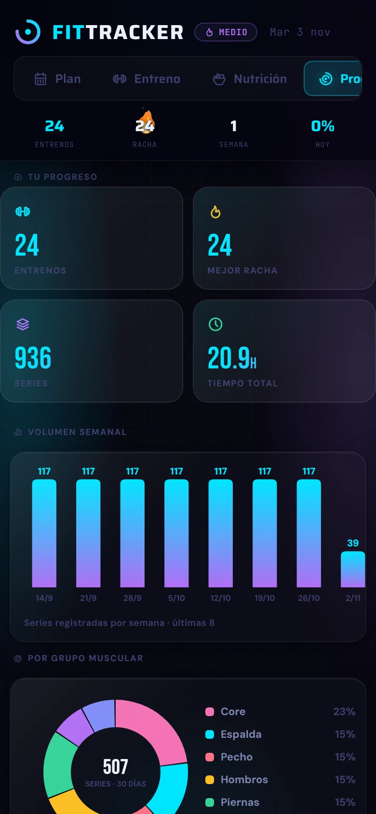
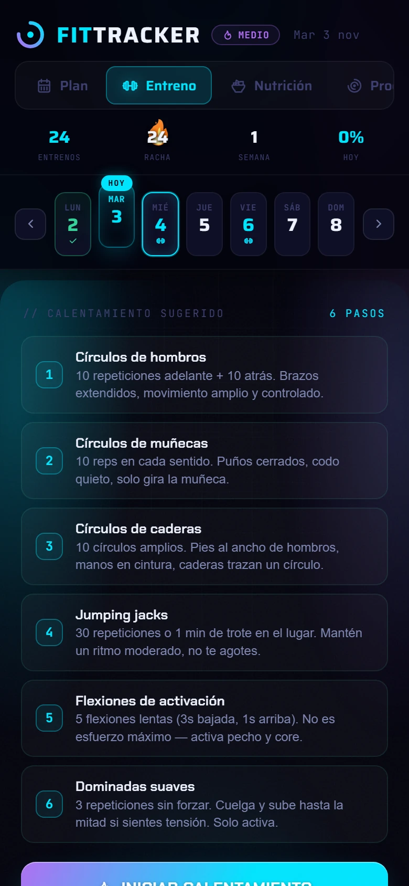
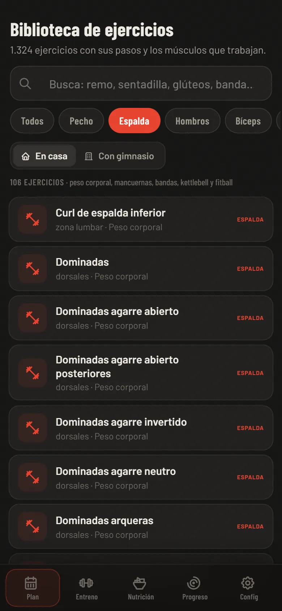
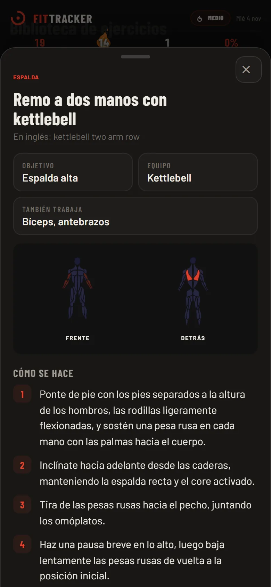
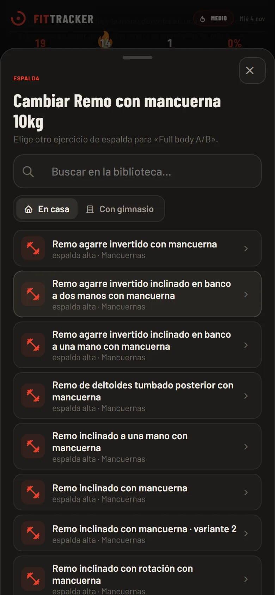
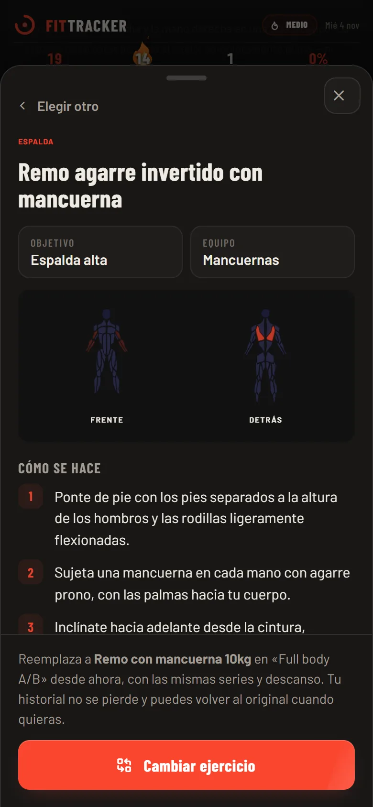

FitTracker
Una app web de entrenamiento y nutrición, hecha en solitario: primero sobre Google Apps Script y una planilla, y después migrada a React, Node y PostgreSQL. A training and nutrition web app, built solo: first on Google Apps Script and a spreadsheet, then migrated to React, Node and PostgreSQL.
- RolRole
- Todo, en solitarioEverything, solo
- EstadoStatus
- Publicada, de uso personal diarioLive, in daily personal use
- AntesBefore
- Google Apps Script y Google Sheets
- AhoraNow
- React, TypeScript, Node, PostgreSQL (Neon), Render
- PruebasTests
- 30 automatizadas30 automated
- ProbarTry it
- fittracker-9y5d.onrender.com


El objetivoThe goal
Quería una app para entrenar en casa que hiciera lo que una planilla no hace: decirme qué toca hoy, cuánto peso o cuántas repeticiones intentar y si de verdad estoy avanzando. Tenía que abrir rápido en el celular, no costar nada y dejar mis datos en un lugar que pudiera revisar a mano.
I wanted a home-training app that does what a spreadsheet can't: tell me what today's session is, how much weight or how many reps to try, and whether I'm actually progressing. It had to open fast on a phone, cost nothing and keep my data somewhere I could check by hand.
Mi rolMy role
Todo, en solitario: modelo de datos, servidor, interfaz, gráficos, animaciones y sonido. Programé con asistencia de IA; las reglas de entrenamiento, el diseño y las pruebas en uso real los decidí yo.
I handled the entire project on my own: data model, server, interface, charts, animations and sound. I programmed with AI assistance; I set the training rules, the design and the real-use testing.
Decisiones técnicasTechnical decisions
El problemaThe problem
Un servidor y una base de datos de verdad cuestan dinero y mantención, para una app de una sola persona.A dedicated server and database would add unnecessary cost and maintenance for a single-user app.La soluciónThe solution
Apps Script sirve la app gratis y 9 hojas guardan rutinas, historial, nutrición, peso, calendario, equipamiento, logros, ajustes y el estado del coach. Las hojas se crean y se migran solas al cambiar de versión.Apps Script serves the app for free, and 9 sheets store routines, history, nutrition, weight, calendar, equipment, achievements, settings and coach state. Sheets are created and migrated automatically on each version change.El problemaThe problem
Cada llamada al servidor tarda segundos, y revisar las hojas en cada llamada lo hacía peor.Every server call takes seconds, and checking the sheets on every call made it worse.La soluciónThe solution
Caché en dos niveles. El servidor recuerda por 6 horas que las hojas están listas, con una clave por versión. El celular muestra al tiro la semana guardada y la actualiza por detrás; sin conexión, sigue mostrándola con un aviso.Two-level caching. The server remembers for 6 hours that the sheets are ready, keyed by version. The app instantly displays the cached weekly plan and refreshes it in the background; offline, it keeps showing it with a notice.El problemaThe problem
Decidir cuándo subir peso o repeticiones a ojo hace que te estanques o que te lesiones.Deciding by feel when to add weight or reps leads to plateaus or injuries.La soluciónThe solution
Cada ejercicio tiene un tipo (con peso, peso corporal o isométrico) y un rango objetivo. Cuando llegas al techo dos sesiones seguidas, o lo pasas por 4 o más, la app propone subir: la mancuerna siguiente o un rango más alto. Propone y espera tu confirmación, y los récords se guardan siempre.Each exercise has a type (weighted, bodyweight or isometric) and a target range. When you hit the top of the range two sessions in a row, or beat it by 4 or more, the app suggests a step up: the next dumbbell or a higher range. It suggests and waits for your confirmation, and records are always saved.// ¿Cumplió o superó el techo del rango?
const cumpleTecho = valorComparable >= repMax;
if (cumpleTecho) {
sesionesCumpliendo++;
const margen = valorComparable - repMax;
const margenGrande = margen >= 4;
if (sesionesCumpliendo >= 2 || margenGrande) {
// Calcula la sugerencia de subida, pero NO la escribe — espera confirmación del usuario
const nuevoEscalon = Number(r[3]||0) + (margenGrande ? 2 : 1);
let nuevoRepMin = repMin, nuevoRepMax = repMax, nuevoPeso = pesoActual;
if (tipo === 'peso') {
const PESOS = [5, 10, 15];
const idxPeso = PESOS.indexOf(pesoActual);
if (idxPeso > -1 && idxPeso < PESOS.length - 1) {
nuevoPeso = PESOS[idxPeso + 1];
} else {
nuevoRepMin = repMin + 2; nuevoRepMax = repMax + (margenGrande ? 4 : 2);
}
} else {
nuevoRepMin = repMin + (margenGrande ? 4 : 2);
nuevoRepMax = repMax + (margenGrande ? 6 : 3);
}
evento = margenGrande ? 'subio_mucho' : 'subio_poco';
}
}El problemaThe problem
Una app de registro aburrida se deja de usar a las pocas semanas.Users tend to abandon an unengaging tracking app after a few weeks.La soluciónThe solution
Rachas, logros con celebración, descanso guiado con consejos según el músculo, gráficos propios en canvas, animaciones, sonidos y cuatro temas de color, todo pensado primero para el celular.Streaks, celebrated achievements, guided rest with tips for each muscle group, custom canvas charts, animations, sounds and four color themes, all designed mobile-first.La migración: de Apps Script a React, Node y PostgreSQLThe migration: from Apps Script to React, Node and PostgreSQL
Apps Script me sirvió para empezar gratis, pero me ataba a Google y a un stack que casi ninguna oferta pide. Así que pasé la app completa a un stack estándar, sin perder nada: mis datos reales, el diseño original y todas las funciones. La versión nueva es la que uso hoy.
Apps Script let me start for free, but it tied me to Google and to a stack few employers look for. So I moved the whole app to a standard stack without losing anything: my real data, the original design and every feature. The new version is the one I use today.
AntesBefore
HTML y JavaScript sin framework servidos por Apps Script; 43 funciones de servidor; 9 hojas de una planilla como base de datos; la cuenta de Google como sesión.Framework-free HTML and JavaScript served by Apps Script; 43 server functions; 9 spreadsheet sheets as the database; the Google account as the session.AhoraNow
React 19 + TypeScript (Vite, TanStack Query); API REST en Node 24 + Express 5 validada con zod; PostgreSQL en Neon con migraciones versionadas; sesión con JWT en cookie httpOnly; desplegada en Render.React 19 + TypeScript (Vite, TanStack Query); a REST API on Node 24 + Express 5 validated with zod; PostgreSQL on Neon with versioned migrations; JWT session in an httpOnly cookie; deployed on Render.El problemaThe problem
La planilla fue cambiando de forma con cada versión: columnas que aparecían, filas viejas sin la columna «nota», nombres de ejercicios que se renombraron y la nutrición guardada varias veces por día.The spreadsheet changed shape with every version: columns that appeared later, old rows missing the «note» column, renamed exercises and nutrition saved several times a day.La soluciónThe solution
Un script que lee el .xlsx por nombre de columna, une los ejercicios renombrados, se queda con el último guardado de cada día y se puede correr varias veces sin duplicar. Primero en modo prueba (deshace todo al final) y después de verdad.A script that reads the .xlsx by column name, merges renamed exercises, keeps each day's last save and can be rerun safely without creating duplicates. First as a dry run (everything is rolled back) and then for real.El problemaThe problem
La base quedó en São Paulo y el servidor en Estados Unidos: cada consulta cruza el continente. Armar la demo tardaba 151 segundos y guardar una serie casi un segundo.The database is in São Paulo and the server in the US: every query crosses the continent. Building the demo took 151 seconds and saving a set almost a second.La soluciónThe solution
Menos viajes: inserciones en bloque (jsonb_to_recordset) y consultas que leen o escriben todo de una vez. La demo bajó a 2 segundos y guardar una serie a 0,18.Fewer round trips: bulk inserts (jsonb_to_recordset) and queries that read or write everything at once. The demo dropped to 2 seconds and saving a set to 0.18.// Guardar una serie y actualizar el coach: una sola consulta (un CTE que modifica, atómico).
// Antes eran 7 viajes al servidor; con la base en otro continente, cada viaje se nota.
await db.query(
`WITH guardada AS (
INSERT INTO series (usuario_id, fecha, ejercicio_id, numero, reps, peso_kg, tiempo_seg, nota)
VALUES ($1, $2, $3, $4, $5, $6, $7, $8)
ON CONFLICT (usuario_id, fecha, ejercicio_id, numero) -- corregir una serie no la duplica
DO UPDATE SET reps = EXCLUDED.reps, peso_kg = EXCLUDED.peso_kg, registrada = now()
RETURNING 1)
UPDATE coach_estado SET sesiones_cumpliendo = $9,
subida_pendiente = coalesce($10::jsonb, subida_pendiente) -- la sugerencia espera tu confirmación
WHERE usuario_id = $1 AND ejercicio_id = $3 AND EXISTS (SELECT 1 FROM guardada)`,
[...datosSerie, r.sesionesCumpliendo, r.subida ? JSON.stringify(r.subida) : null]);ON CONFLICT corrige la serie si ya existía, y el WITH hace que el coach solo se actualice si la serie quedó guardada.ON CONFLICT fixes the set if it already existed, and the WITH makes the coach update only if the set was saved.Con datos inventados, sin crear cuenta. Está en un plan gratis: al abrir esta página ya se empezó a despertar, así que normalmente abre en pocos segundos.
With made-up data, no account needed. It runs on a free plan: opening this page already started waking it up, so it usually opens within a few seconds.
El rediseño: más rápida, cómoda y con identidad propiaThe redesign: faster, easier to use and with its own identity
Migrada, la app funcionaba, pero seguía pareciéndose a cualquier app hecha con IA: negro con neón cian y violeta, una columna de 560 px en el computador y una primera carga de 46 segundos. La rehíce en cinco pasos, probando cada uno en el celular y en el computador antes de pasar al siguiente.
Once migrated, the app worked, but it still looked like any AI-made app: black with cyan and violet neon, a 560 px column on desktop and a 46-second first load. I redid it in five steps, testing each one on phone and desktop before moving on.
El problemaThe problem
El servidor gratis se duerme sin visitas: la primera carga eran 46 segundos de pantalla en blanco, y quien llegaba desde aquí se iba antes.The free server sleeps when idle: the first load was 46 seconds of blank screen, and anyone coming from here left before it finished.La soluciónThe solution
Este portafolio lo despierta apenas abres esta página. La app es instalable y abre al instante desde su caché (solo los datos esperan), con una pantalla que explica la espera si la hay. Además, menos peso: íconos recortados y pantallas que se bajan al abrirlas.This portfolio wakes it up as soon as you open this page. The app is installable and opens instantly from its cache (only the data waits), with a screen that explains any wait. Plus less weight: trimmed icons and screens that load when opened.El problemaThe problem
Las pestañas iban arriba y «Progreso» quedaba cortado. En el entreno, lo primero que se veía eran cajas de récord, y el botón para registrar la serie quedaba lejos del pulgar.The tabs sat at the top and «Progress» was cut off. During a workout the first thing on screen was record boxes, and the button to log a set was far from your thumb.La soluciónThe solution
Barra de navegación abajo, con una píldora que se desliza a la pestaña activa. El entreno ocupa toda la pantalla: arriba el ejercicio y el reloj, y fijos abajo el contador de repeticiones y «Registrar» (en el descanso, −15 s, Saltar y +15 s).A bottom navigation bar with a pill that slides to the active tab. The workout fills the screen: the exercise and timer at the top, and the rep counter and «Log» fixed at the bottom (during rest, −15 s, Skip and +15 s).El problemaThe problem
Todo vivía en una columna angosta al medio de la pantalla, y el entreno, pensado en tres columnas, quedaba apretado.Everything lived in a narrow column in the middle of the screen, and the three-column workout view was squeezed.La soluciónThe solution
Cada pantalla usa el ancho: Progreso es un tablero en grilla, Nutrición separa el día de los alimentos, y el entreno muestra sus tres columnas (controles, reloj y cola de ejercicios).Every screen uses the width: Progress is a grid dashboard, Nutrition splits the day from the foods, and the workout shows its three columns (controls, timer and exercise queue).El problemaThe problem
El neón cian y violeta no decía nada del entrenamiento y es justo el estilo genérico que se repite en apps hechas con IA.The cyan and violet neon said nothing about training, and it's exactly the generic style repeated across AI-made apps.La soluciónThe solution
Probé tres direcciones sobre la app real y elegí la de la sala de pesas: grafito, blanco tiza y el rojo de los discos de competición, con cifras en letra condensada de marcador. El color tiene significado: rojo es acción, acero es descanso, verde es hecho y ámbar es récord. Otra de las direcciones quedó como tema claro.I tried three directions on the real app and picked the weight room: graphite, chalk white and the red of competition plates, with numbers in a condensed scoreboard typeface. Color carries meaning: red is action, steel is rest, green is done and amber is a record. Another direction became the light theme.

El problemaThe problem
La rutina venía fija: si un ejercicio no te acomodaba o no tenías el equipo, no había cómo cambiarlo sin tocar la base de datos.The routine was fixed: if an exercise didn't suit you or you lacked the equipment, there was no way to change it without touching the database.La soluciónThe solution
Una biblioteca de 1.324 ejercicios con búsqueda, filtros por músculo y equipo, mapa muscular y pasos en español, armada con los datos de un dataset abierto (licencia MIT; sin sus imágenes, que no son libres). Traduje los 1.324 nombres al español: la mayoría con un glosario propio y el resto a mano. Desde Plan, cualquier ejercicio se cambia por uno equivalente: el servidor conserva series y descanso, ajusta el peso al equipo, le da al nuevo su propio progreso del coach y recuerda el original para volver. El historial no se toca.A library of 1,324 exercises with search, muscle and equipment filters, a muscle map and steps in Spanish, built from an open dataset (MIT license; without its images, which aren't free). I translated all 1,324 names into Spanish: most with my own glossary and the rest by hand. From the Plan, any exercise can be swapped for an equivalent: the server keeps sets and rest, adjusts the weight to the equipment, gives the new one its own coach progress and remembers the original so you can go back. The history is untouched.



Qué aprendíWhat I learned
- Migrar es más que reescribir: lo difícil fue traer los datos reales tal como estaban, con sus versiones y sus errores, sin perder nada.
- Con un servidor lento, lo que más se nota es hacer menos viajes y mostrar algo de inmediato, más que optimizar el código.
- Separar sugerir de decidir: la app propone la subida, pero la persona confirma, y eso le da confianza en el coach.
- Versionar el esquema de datos desde el principio permitió agregar hojas y columnas sin romper el historial ya guardado.
- Para salir del diseño genérico sirvió probar varias direcciones sobre la app real, no sobre bocetos: así se nota qué funciona con los datos de verdad.
- Migrating is more than rewriting: the hard part was bringing the real data as it was, with its versions and its mistakes, without losing anything.
- With a slow server, what you notice most is making fewer round trips and showing something right away, more than optimizing code.
- Separating suggesting from deciding: the app proposes the step up but the person confirms it, which builds trust in the coach.
- Versioning the data schema from the start let me add sheets and columns without breaking the saved history.
- To move away from a generic design, trying several directions on the real app, not on sketches, showed what works with real data.
Capturas de la app real con datos de ejemplo; las marcadas «Antes» son del diseño anterior. El código es privado, pero lo comparto en procesos de selección.
Screenshots of the real app with sample data; those marked «Before» show the previous design. The code is private, but I can share it during hiring processes.